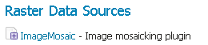
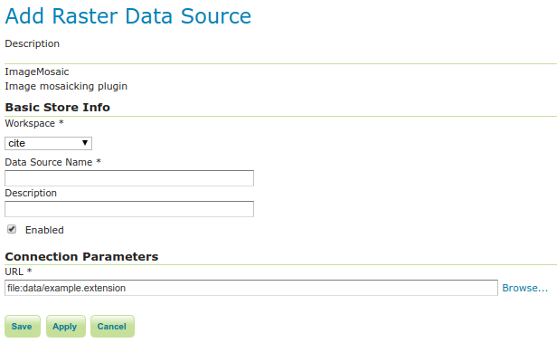
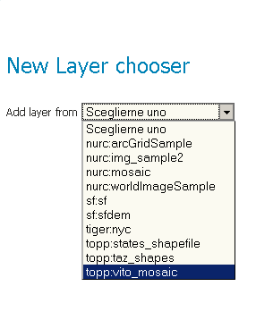
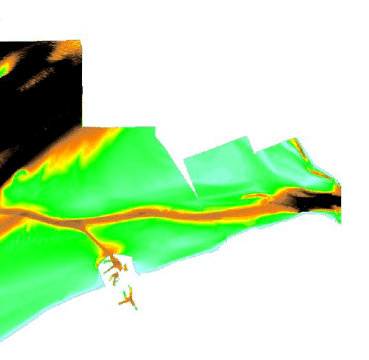
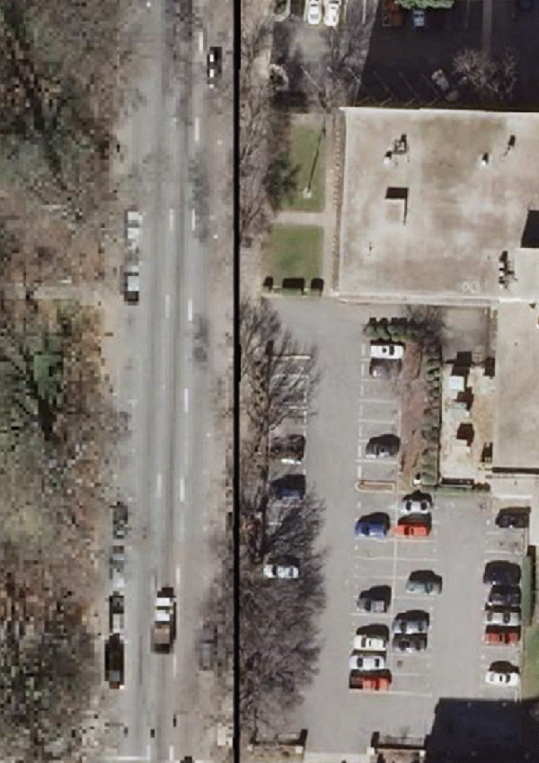
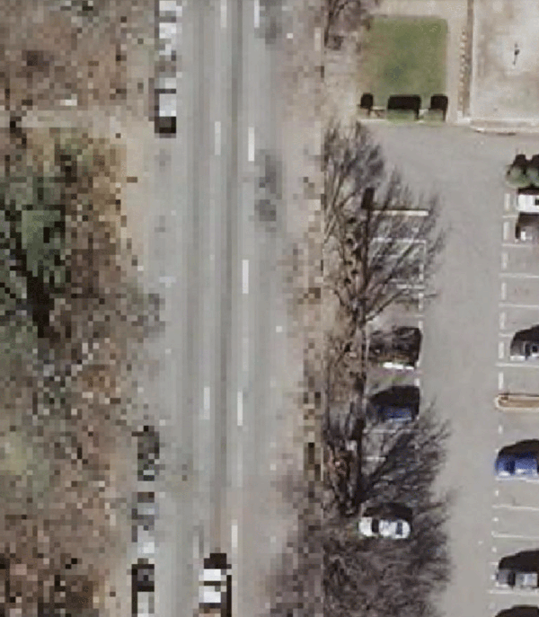

Using the ImageMosaic extension¶
This tutorial will show you how to configure and publish an ImageMosaic store and coverage, followed by some configuration examples.
Configuring a coverage in GeoServer¶
This is a process very similar to creating a featuretype. More specifically, one has to perform the steps highlighted in the sections below:
Create a new store¶
Go to and click Add new Store.
Select ImageMosaic under Raster Data Source:
ImageMosaic in the list of raster data stores¶
In order to create a new mosaic it is necessary to choose a workspace and store name in the Basic Store Info section, as well as a URL in the Connection Parameters section. Valid URLs include:
The absolute path to the shapefile index, or a directory containing the shapefile index.
The absolute path to the configuration file (*.properties`) or a directory containing the configuration file. If
datastore.propertiesandindexer.propertiesexist, they should be in the same directory as this configuration file.The absolute path of a directory where the files you want to mosaic reside. In this case GeoServer automatically creates the needed mosaic files (.dbf, .prj, .properties, .shp and .shx) by inspecting the data present in the given directory and any subdirectories.
Click Save:
Configuring an ImageMosaic data store¶
Create a new coverage¶
Navigate to and click Add a new resource.
Choose the name of the store you just created:
Layer Chooser¶
Click the layer you wish to configure and you will be presented with the Coverage Editor:

Coverage Editor¶
Make sure there is a value for Native SRS, then click the Submit button. If the Native CRS is
UNKNOWN, you must declare the SRS in the Declared SRS field.Click Save.
Use the Layer Preview to view the mosaic.
Warning
If the created layer appears to be all black, it may be that GeoServer has not found any acceptable granules in the provided index. It is also possible that the shapefile index is empty (no granules were found in the provided directory) or it might be that the granules’ paths in the shapefile index are not correct, which could happen if an existing index (using absolute paths) is moved to another place. If the shapefile index paths are not correct, then the DBF file can be opened and fixed with an editor. Alternately, you can delete the index and let GeoServer recreate it from the root directory.
Configuration examples¶
Below are a few examples of mosaic configurations to demonstrate how we can make use of the ImageMosaic parameters.
DEM/Bathymetry¶
Such a mosaic can be used to serve large amounts of data representing altitude or depth and therefore does not specify colors directly (it needs an SLD to generate pictures). In our case, we have a DEM dataset which consists of a set of raw GeoTIFF files.
The first operation is to create the CoverageStore specifying, for example, the path of the shapefile in the URL field.
Inside the Coverage Editor Publishing tab, you can specify the dem default style in order to represent the visualization style of the mosaic. The following is an example style:
<?xml version="1.0" encoding="ISO-8859-1"?>
<StyledLayerDescriptor version="1.0.0"
xmlns="http://www.opengis.net/sld" xmlns:ogc="http://www.opengis.net/ogc"
xmlns:xlink="http://www.w3.org/1999/xlink" xmlns:xsi="http://www.w3.org/2001/XMLSchema-instance"
xsi:schemaLocation="http://www.opengis.net/sld http://schemas.opengis.net/sld/1.0.0/StyledLayerDescriptor.xsd">
<NamedLayer>
<Name>gtopo</Name>
<UserStyle>
<Name>dem</Name>
<Title>Simple DEM style</Title>
<Abstract>Classic elevation color progression</Abstract>
<FeatureTypeStyle>
<Rule>
<RasterSymbolizer>
<Opacity>1.0</Opacity>
<ColorMap>
<ColorMapEntry color="#000000" quantity="-9999" label="nodata" opacity="1.0" />
<ColorMapEntry color="#AAFFAA" quantity="0" label="values" />
<ColorMapEntry color="#00FF00" quantity="1000" label="values" />
<ColorMapEntry color="#FFFF00" quantity="1200" label="values" />
<ColorMapEntry color="#FF7F00" quantity="1400" label="values" />
<ColorMapEntry color="#BF7F3F" quantity="1600" label="values" />
<ColorMapEntry color="#000000" quantity="2000" label="values" />
</ColorMap>
</RasterSymbolizer>
</Rule>
</FeatureTypeStyle>
</UserStyle>
</NamedLayer>
</StyledLayerDescriptor>
In this way you have a clear distinction between the different intervals of the dataset that compose the mosaic, like the background and the “nodata” area.
Note
The “nodata” on the sample mosaic is -9999. The default background value is for mosaics is 0.0.
The result is the following:
Basic configuration¶
By setting the other configuration parameters appropriately, it is possible to improve both the appearance of the mosaic as well as its performance. For instance, we could:
Make the “nodata” areas transparent and coherent with the real data. To achieve this we need to change the opacity of the “nodata” ColorMapEntry in the
demstyle to0.0and set theBackgroundValuesparameter to-9999so that empty areas will be filled with this value. The result is as follows:Advanced configuration¶
Allow multithreaded granules loading. By setting the
AllowMultiThreadingparameter totrue, GeoServer will load the granules in parallel using multiple threads with a increase in performance on some architectures.
The configuration parameters are as follows:
Parameter |
Value |
|---|---|
MaxAllowedTiles |
2147483647 |
BackgroundValues |
-9999 |
OutputTransparentColor |
“no color” |
InputTransparentColor |
“no color” |
AllowMultiThreading |
True |
USE_JAI_IMAGEREAD |
True |
SUGGESTED_TILE_SIZE |
512,512 |
Aerial imagery¶
In this example we are going to create a mosaic that will serve aerial imagery, specifically RGB GeoTIFFs. Because this is visual data, in the Coverage Editor you can use the basic raster style, which is just a stub SLD to instruct the GeoServer raster renderer to not do anything particular in terms of color management:
<?xml version="1.0" encoding="ISO-8859-1"?>
<StyledLayerDescriptor version="1.0.0"
xmlns="http://www.opengis.net/sld" xmlns:ogc="http://www.opengis.net/ogc"
xmlns:xlink="http://www.w3.org/1999/xlink" xmlns:xsi="http://www.w3.org/2001/XMLSchema-instance"
xsi:schemaLocation="http://www.opengis.net/sld http://schemas.opengis.net/sld/1.0.0/StyledLayerDescriptor.xsd">
<NamedLayer>
<Name>raster</Name>
<UserStyle>
<Name>raster</Name>
<Title>Raster</Title>
<Abstract>A sample style for rasters, good for displaying imagery </Abstract>
<FeatureTypeStyle>
<FeatureTypeName>Feature</FeatureTypeName>
<Rule>
<RasterSymbolizer>
<Opacity>1.0</Opacity>
</RasterSymbolizer>
</Rule>
</FeatureTypeStyle>
</UserStyle>
</NamedLayer>
</StyledLayerDescriptor>
The result is the following:
Basic configuration¶
Note
Those ugly black areas are the result of applying the default mosaic parameters to a mosaic that does not entirely cover its bounding box. The areas within the BBOX that are not covered with data will default to a value of 0 on each band. Since this mosaic is RGB we can simply set the OutputTransparentColor to 0,0,0 in order to get transparent fills for the BBOX.
The various parameters can be set as follows:
Parameter |
Value |
|---|---|
MaxAllowedTiles |
2147483647 |
BackgroundValues |
(default) |
OutputTransparentColor |
#000000 |
InputTransparentColor |
“no color” |
AllowMultiThreading |
True |
USE_JAI_IMAGEREAD |
True |
SUGGESTED_TILE_SIZE |
512,512 |
The result is the following:

Advanced configuration¶
Scanned maps¶
In this case we want to show how to serve scanned maps (mostly B&W images) via a GeoServer mosaic.
In the Coverage Editor you can use the basic raster since there is no need to use any of the advanced RasterSymbolizer capabilities.
The result is the following.
Basic configuration¶
This mosaic, formed by two single granules, shows a typical case where the “nodata” collar areas of the granules overlap, as shown in the picture above.
In this case we can use the InputTransparentColor parameter to make the collar areas disappear during the superimposition process — in this case, by using an InputTransparentColor of #FFFFFF.
The final configuration parameters are the following:
Parameter |
Value |
|---|---|
MaxAllowedTiles |
2147483647 |
BackgroundValues |
(default) |
OutputTransparentColor |
“no color” |
InputTransparentColor |
#FFFFFF |
AllowMultiThreading |
True |
USE_JAI_IMAGEREAD |
True |
SUGGESTED_TILE_SIZE |
512,512 |
This is the result:
Advanced configuration¶
Dynamic imagery¶
A mosaic need not be static. It can contain granules which change, are added or deleted. In this example, we will create a mosaic that changes over time.
Create a mosaic in the standard way. (The specific configuration isn’t important.)

This mosaic contains 5 granules. Note that InputTransparentColor is set to #FFFFFF here.¶
To add new granules, the index that was created when the mosaic was originally created needs to be regenerated. There are two ways to do this:
Manually through the file system
Through the REST interface
To update an ImageMosaic through the file system:
Update the contents of the mosaic by copying the new files into place. (Subdirectories are acceptable.)
Delete the index files. These files are contained in the top level directory containing the mosaic files and include (but are not limited to) the following:
<mosaic_name>.dbf<mosaic_name>.fix<mosaic_name>.prj<mosaic_name>.properties<mosaic_name>.shp<mosaic_name>.shx
(Optional but recommended) Edit the layer definition in GeoServer, making to sure to update the bounding box information (if changed).
Save the layer. The index will be recreated.
This mosaic contains 9 granules¶
Note
Please see the REST section for information on Uploading a new image mosaic.
Multi-resolution imagery with reprojection¶
As a general rule, we want to have the highest resolution granules shown “on top”, with the lower-resolution granules filling in the gaps as necessary.
In this example, we will serve up overlapping granules that have varying resolutions. In addition, we will mix resolutions, such that the higher resolution granule is reprojected to match the resolution of the lower resolution granules.
In the Coverage Editor, use the basic
rasterstyle.Create the mosaic in GeoServer.
One important configuration setting is the SORTING parameter of the layer. In order to see the highest resolution imagery on top (the typical case), it must be set to resolution A. (For the case of lowest resolution on top, use resolution D .)
Make any other configuration changes.
Also, in order to allow for multiple CRSs in a single mosaic, an
indexer.propertiesfile will need to be created. Use the followingGranuleAcceptors=org.geotools.gce.imagemosaic.acceptors.HeterogeneousCRSAcceptorFactory GranuleHandler=org.geotools.gce.imagemosaic.granulehandler.ReprojectingGranuleHandlerFactory HeterogeneousCRS=true MosaicCRS=EPSG\:4326 PropertyCollectors=CRSExtractorSPI(crs),ResolutionExtractorSPI(resolution) Schema=*the_geom:Polygon,location:String,crs:String,resolution:String
The MosaicCRS property is not mandatory, but it’s a good idea to set a predictable target CRS that all granule footprints can be reprojected into, otherwise the mosaic machinery will use the CRS of the first indexed granule.
Save this file in the root of the mosaic directory (along with the index files). The result is the following:
Closeup of granule overlap (high resolution granule on right)¶
To remove the reprojection artifact (shown in the above as a black area) edit the layer configuration to set
InputTransparentColorto#000000.Closeup of granule overlap (high resolution granule on right)¶
Referring to a datastore configured in GeoServer¶
It is possible to make the mosaic refer to an existing data store. The ``datastore.properties`` file in this case will
contain only one or two properties, referring to the store to be used via the StoreName property.
For simple cases, e.g., a PostGIS store, the following will be sufficient:
StoreName=workspace:storename
For Oracle or H2, it’s best to also specify the SPI in order to inform the mosaic that it needs to work around specific limitations of the storage (e.g., forced uppercase attribute usage, limitation in attribute name length and the like):
StoreName=workspace:storename
SPI=org.geotools.data.oracle.OracleNGDataStoreFactory
The above will be sufficient in case the image mosaic can create the index table and perform normal indexing, using
the directory name as the table name.
In case a specific table name needs to be used, add an ``indexer.properties`` specifying the TypeName property,
e.g.:
TypeName=myMosaicTypeName
In case the index “table” already exists instead, then a ``indexer.properties`` file will be required, with the following contents:
UseExistingSchema=true
TypeName=nameOfTheFeatureTypeContainingTheIndex
AbsolutePath=true
The above assumes location attribute provides absolute paths to the mosaic granules, instead of paths relative to
the mosaic configuration files directory.